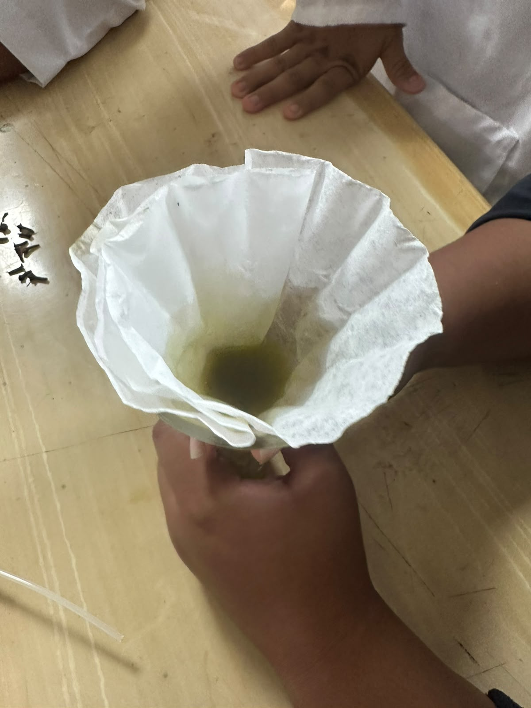
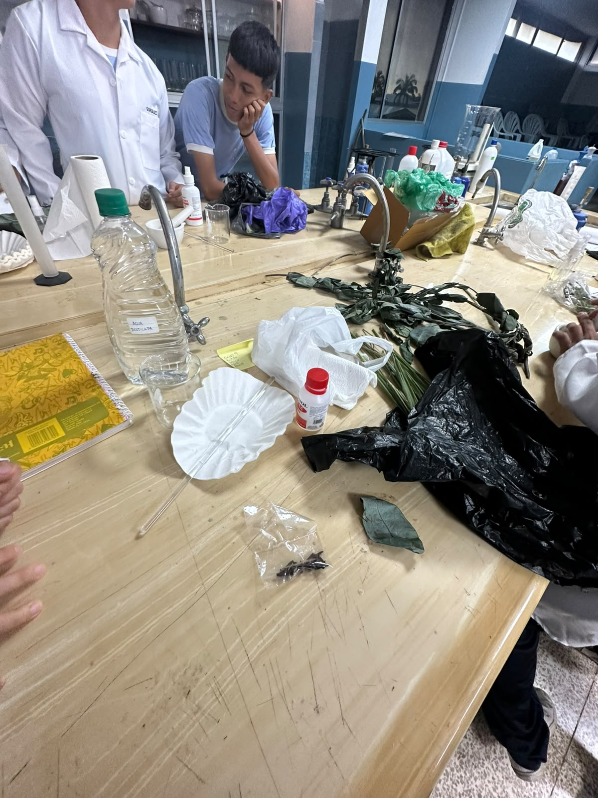
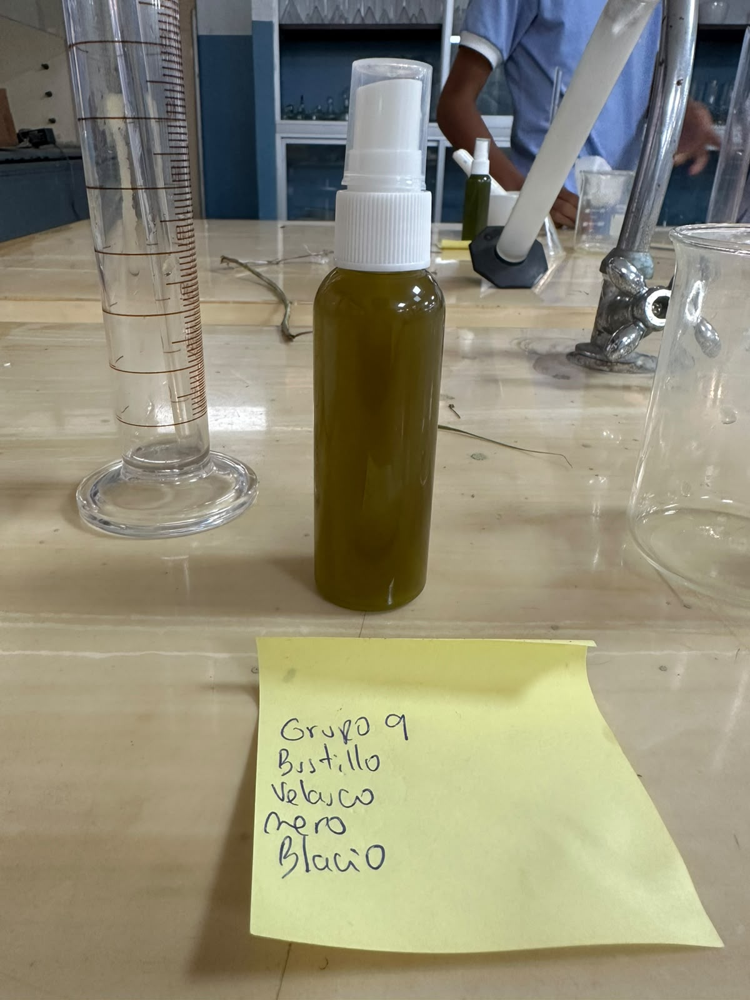

Proyecto interdisciplinario del Segundo Trimestre enfocado en la investigación sobre los mosquitos, la prevención de sus picaduras y el desarrollo de una propuesta de biorepelente.
Mathias David Mero Viteri
Primero de Bachillerato
Paralelo Alfa
Segundo Trimestre
2026
Para presentar este proyecto se utilizarán diferentes recursos que permitan explicar de manera sencilla la investigación realizada y mostrar el proceso de elaboración del producto.
Este blog será la principal forma de presentación. Aquí se organizará la investigación, los materiales, las evidencias, el producto final y las conclusiones.
Se puede elaborar un material visual con información resumida, imágenes y recomendaciones para prevenir las picaduras de mosquitos.
El proyecto también puede explicarse frente al curso, presentando el problema investigado, el procedimiento realizado y los resultados obtenidos.
Los mosquitos son pequeños insectos que viven en diferentes partes del mundo. Algunas especies pueden transmitir microorganismos que producen enfermedades cuando pican a una persona.
Evitar las picaduras de mosquitos ayuda a disminuir el riesgo de algunas enfermedades transmitidas por estos insectos. También es importante eliminar lugares donde se acumule agua, ya que pueden convertirse en criaderos de mosquitos.
Un repelente es un producto destinado a disminuir el contacto entre los mosquitos y las personas. Debe utilizarse correctamente y siguiendo siempre las instrucciones de seguridad del producto.
En este proyecto se estudia la idea de un biorepelente elaborado a partir de materiales de origen natural. Algunas plantas aromáticas, como la citronela, son investigadas por los compuestos y aromas que producen.
Este trabajo permite conocer mejor a los mosquitos, comprender la importancia de prevenir sus picaduras y desarrollar conciencia sobre el cuidado de la salud y del ambiente.
Para desarrollar y presentar el proyecto se pueden utilizar los siguientes materiales:
A continuación se muestran fotografías del desarrollo del proyecto.

Evidencia 1Recolección de materiales

Evidencia 2Desarrollo del proyecto

Evidencia 3Producto terminado
Como producto del proyecto se propone la presentación de un biorepelente escolar relacionado con el estudio de alternativas de origen natural frente a los mosquitos.
Además del producto físico, este blog funciona como una bitácora digital en la que se registra la investigación, los materiales, las evidencias y los conocimientos adquiridos durante el proyecto.
Considero que este proyecto es importante porque me permitió aprender más sobre los mosquitos y sobre algunas formas de prevenir sus picaduras. También aprendí a investigar, organizar información y utilizar herramientas digitales para presentar un trabajo escolar.
Me pareció interesante relacionar varias materias en un mismo proyecto y crear una propuesta que pueda ayudar a informar a otras personas.
Para realizar la investigación se pueden consultar fuentes confiables como: